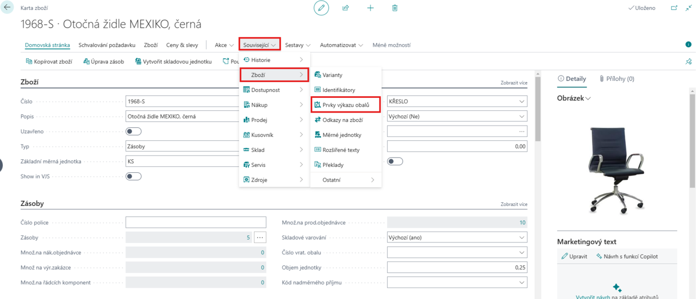
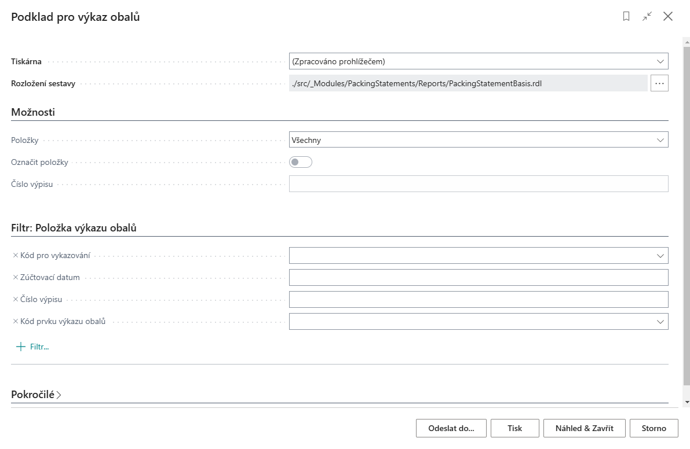

Evidence obalů (EKO-KOM)
Aktualizace: 01.3.2025
Obaly hrají klíčovou roli v celém dodavatelském řetězci – chrání zboží, usnadňují manipulaci a pomáhají splnit legislativní požadavky. Jejich správa je však často náročná, ať už se jedná o obaly pro jedno použití, obaly pro opakované použití nebo obaly s různými podmínkami zpoplatnění.
Ruční evidence těchto obalů může být nepřehledná a náchylná k chybám. Firmy se často potýkají s nesrovnalostmi v reportech, složitým dohledáváním dat nebo neefektivním vykazováním odpovědným institucím. Modul Evidence obalů (EKOKOM) tento proces automatizuje a zajišťuje přesnou evidenci napříč celým životním cyklem obalů.
Moderní přístup k evidenci obalů
Modul Evidence obalů (EKOKOM) pro MicrosoftDynamics 365 Business Central vám poskytne plnou kontrolu nadobaly všech typů. Umožňuje evidovat a sledovat nejen obalyna jedno použití, ale i opakovaně použitelné obalya rozlišovat je dle zpoplatnění – zpoplatněné, předplacené aneplacené.
Systém automaticky propojuje obaly s pohyby zboží, čímž eliminuje potřebu manuálního zaznamenávání. Díky plné integraci s výkaznictvím EKO-KOM jsou všechny legislativní podklady připraveny automaticky a v souladu se Zákonem o obalech č. 477/2001 Sb.
Funkce modulu Evidence obalů (EKOKOM)
- Automatická evidence všech typů obalů - Modul rozlišuje obaly dle použití i zpoplatnění a umožňuje přesnou klasifikaci v souladu s firemními a legislativními požadavky.
- Plná integrace se skladovým hospodářstvím - Obaly jsou pevně propojeny s materiálovými toky a evidovány spolu s pohybem zboží, což umožňuje přesné sledování jejich stavu.
- Legislativní výkaznictví EKO-KOM - Systém automaticky generuje podklady pro výkaz obalů a další reporty dle platné legislativy, čímž eliminuje chybovost a urychluje administrativní procesy.
- Přiřazení obalových prvků ke zboží - Každý obal lze propojit s konkrétními produkty a evidovat je společně v rámci skladového hospodářství.
- Přehledné reporty a sestavy - Díky snadno dostupným reportům získáte vždy aktuální přehled o stavu obalového hospodářství a připravené podklady pro reporting.
Přiřazování prvků Výkazu obalů
Pro správné fungování modulu Evidence obalů je nutné na kartách zboží přiřadit odpovídající prvky výkazu obalů.
Toto přiřazení se provádí přímo na kartě zboží v nabídce Související > Zboží > Prvky výkazu obalů.

Každé zboží a jeho měrná jednotka mohou být zařazeny do jednoho nebo více výkazů obalů. Přiřazení prvku je vázáno na Kód pro vykazování a Typ pohybu. Tyto hodnoty společně určují zařazení obalu do správné kategorie ve výkazu. Doplněním Kódu se nastaví konkrétní pozice ve výkazu a pole Hmotnost se vztahuje k měrné jednotce na řádku výkazu.

Reporting
Modul Evidence obalů základ poskytuje komplexní nástroje pro reporting obalového hospodářství. Díky integrovanému systému můžete snadno generovat podklady pro výkaznictví a zajistit tak soulad s legislativními požadavky.
- Vyberte ikonu
 , zadejte Podklad pro výkaz obalů a poté vyberte související odkaz.
, zadejte Podklad pro výkaz obalů a poté vyberte související odkaz. - Zobrazí se dialogové okno s možnostmi nastavení reportu.
V této sestavě lze nastavit:

- Položky - Umožňuje zvolit, zda se mají zobrazit všechny obaly, nevykázané obaly nebo již vykázané obaly.
- Nevykázané - Obaly, které dosud nebyly zahrnuty do žádného výkazu. Pokud je chcete vykázat, je nutné aktivovat volbu Označit položky.
- Vykázané - Obaly, které již byly zahrnuty v předchozích výkazech.
- Označit položky - Dostupné pouze při volbě Nevykázané. Tato volba umožňuje označit obaly pro vykázání, čímž zajistíte, že nebudou v budoucích reportech vedeny jako „nevykázané“.
- Číslo výpisu - Slouží k jednoznačné identifikaci konkrétního výkazu.
- Filtr: Položka výkazu obalů - Umožňuje upřesnit vykazovaná data podle kódu pro vykazování, zúčtovacího data, čísla výpisu nebo kódu prvku výkazu obalů.
- Pokud aktivujete volbu Označit položky, systém vás automaticky přesměruje na pole Kód prvku výkazu obalů, kde je nutné vybrat odpovídající klasifikaci.
Po nastavení parametrů můžete sestavu exportovat, vytisknout nebo zobrazit náhled.